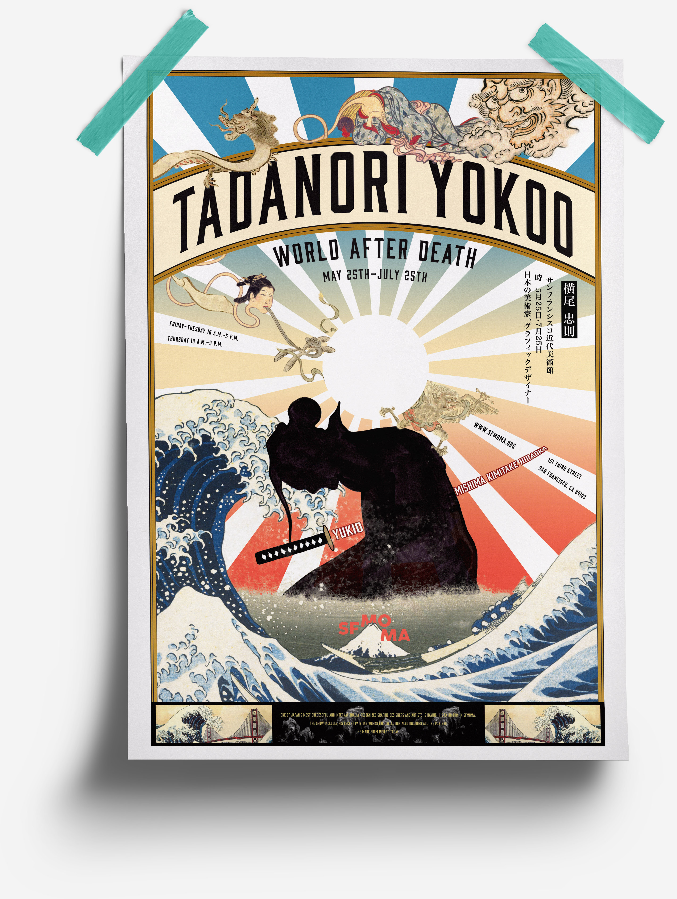

TADANORI YOKOO—THE WORLD AFTER DEATH
Poster Design | 2017 | College Project
In this project, each one of us in our class was assigned a graphic designer, and we were supposed to design a poster for their exhibition in SFMOMA. The designer I got is Tadanori Yokoo, a Japanese graphic designer and artist. The supernatural phenomena he encountered as a kid and his friend’s death have a strong impact on his work. He shows great interest in religion and death, which is the reason why I named this exhibition The World After Death.
The demons are from the famous Japanese painting 百鬼夜行 (Night Parade of One Hundred Demons). The wave is from Hokusai's most famous work, 神奈川沖浪裏 (Under a wave off Kanagawa). The harakiri figure in the middle is my own illustration, representing his friend. The background is his favorite element, a radiant sun. The Golden Gate Bridge at then bottom of the poster represents the location of this exhibition, San Francisco.
Here is the poster, bus ad and postcard in context.
